Historie
Baťova škola práce byla založena v roce 1925 Tomášem Baťou ve Zlíně s cílem vychovávat mladé odborníky pro průmyslovou výrobu a podnikání. Škola kladla důraz na spojení teoretického vzdělání s praktickou prací a formovala budoucí vedoucí pracovníky firmy Baťa.
-
1918
Založení firmy Baťa
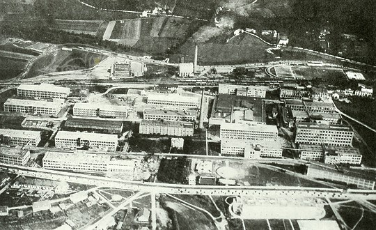
Obuvnická dílna Tomáše Bati se začíná měnit v moderní průmyslový podnik. Dynamický rozvoj firmy postupně utváří podobu města Zlína i život jeho obyvatel.
-
1925
Baťova škola práce
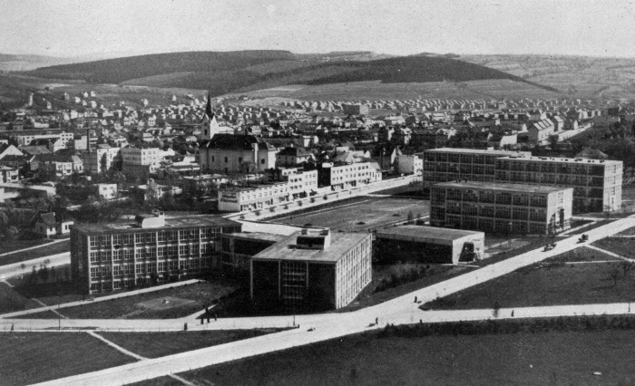
Založena škola inspirovaná pracovní školou Henryho Forda, která spojuje vzdělávání s praxí. Žáci získávají nejen teoretické znalosti, ale i pracovní zkušenosti přímo ve firmě Baťa.
-
1926
Výstavba internátů
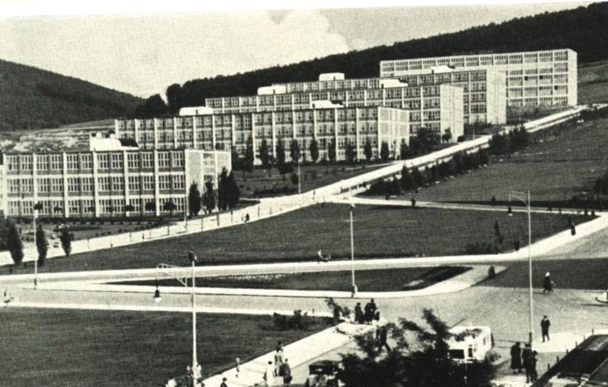
Začíná stavba studentských internátů, které vytvářejí moderní a organizované prostředí pro žáky. Internáty se stávají součástí širšího systému péče o mladé pracovníky firmy.
-
1933
IV. chlapecký internát
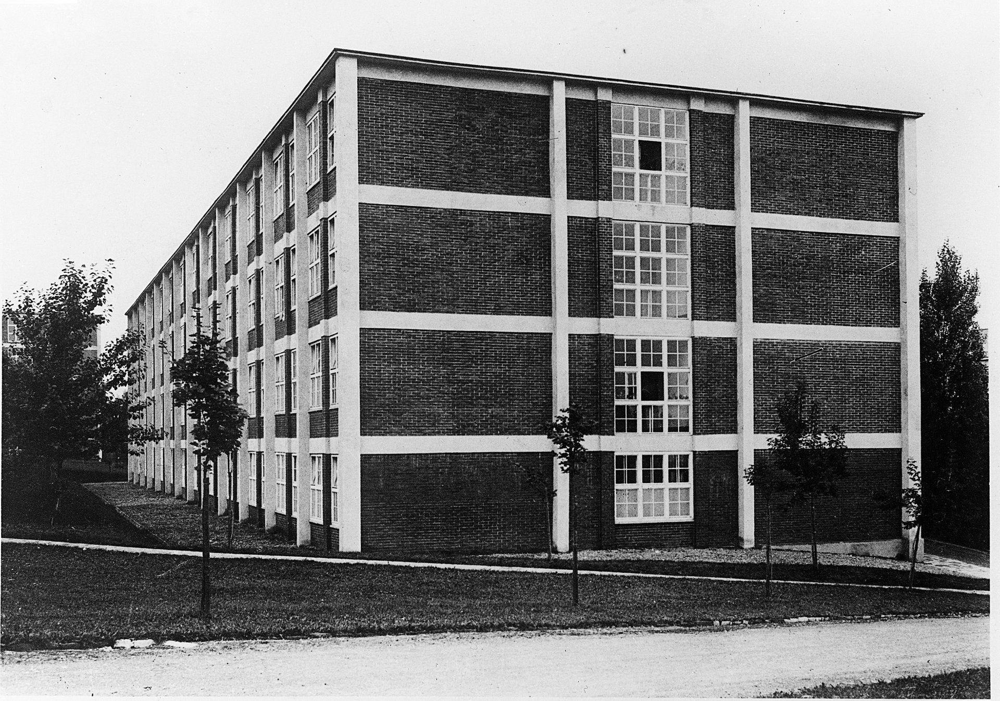
Dokončena stavba čtvrtého chlapeckého internátu, dnešní hlavní budovy školy. Objekt dodnes představuje významnou památku baťovského stavebního odkazu.
-
1937
Průmyslová škola ve Zlíně
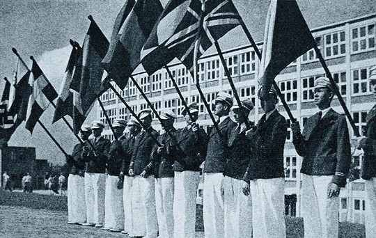
Vzniká rozšířená průmyslová škola s obory strojním, stavebním, chemickým, elektrotechnickým, pletařským a koželužským. Zavedena byla také unikátní třístupňová nástavbová soustava, která umožnila pokračovat ve studiu podle odborného zaměření.
-
1948
Samostatné průmyslové školy
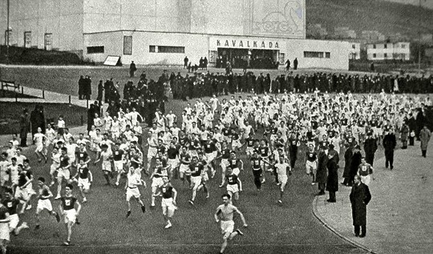
Po znárodnění dochází k rozdělení škol podle jednotlivých oborů – chemická, koželužská, strojnická a stavební. Každá z nich se dále profiluje jako specializovaná odborná instituce.
-
1961
SPŠ kožařská
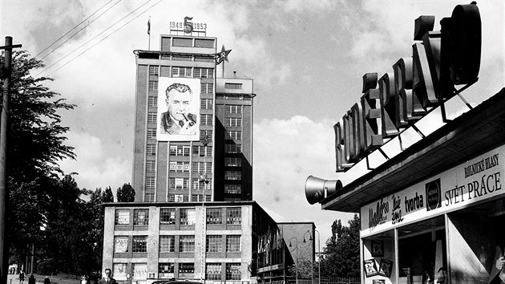
Škola nese nový název Střední průmyslová škola kožařská a posiluje výuku kožedělných oborů. V tomto období se Zlín stává centrem obuvnického a kožedělného vzdělávání v Československu.
-
1973
Mechanik číslicově řízených strojů
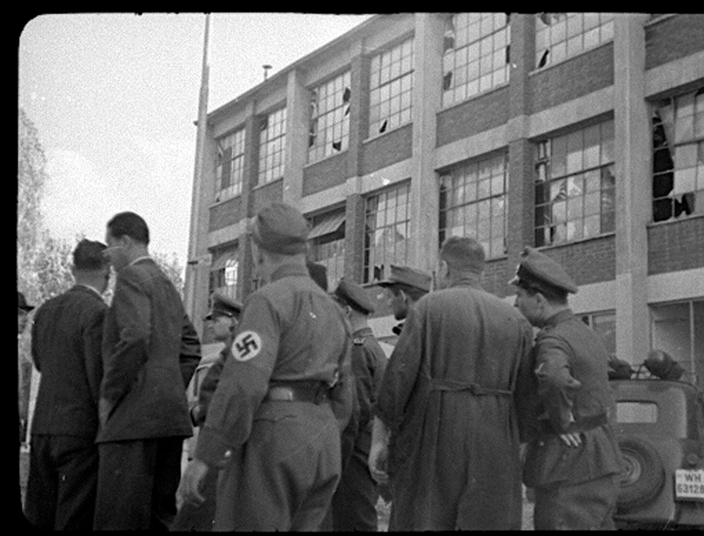
Škola jako jedna z prvních v republice zavádí výuku moderního oboru mechanik číslicově řízených strojů. Spolu s ním vznikají další perspektivní obory, jako mechanik seřizovač či univerzální obráběč kovů.
-
1993
Integrovaná střední škola technická
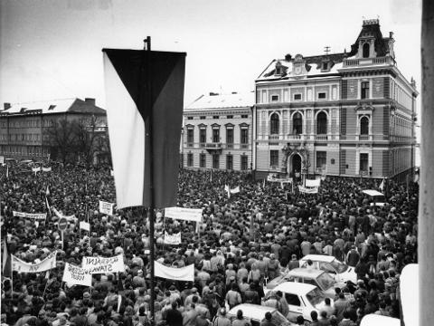
Ze středního odborného učiliště vzniká Integrovaná střední škola technická (ISŠT). Nabídka oborů se rozšiřuje na strojírenské, elektrotechnické, ekonomické i polygrafické.
-
2007
SPŠP-COP Zlín
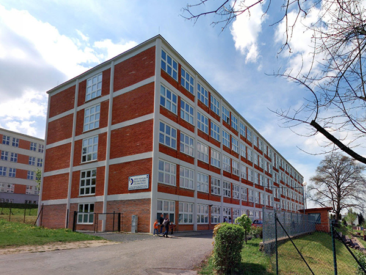
Sloučením několika škol a domova mládeže vzniká Střední průmyslová škola polytechnická – Centrum odborné přípravy Zlín. Nový subjekt sjednocuje odborné vzdělávání v regionu pod jednu instituci.
-
2012
Nová centrální budova
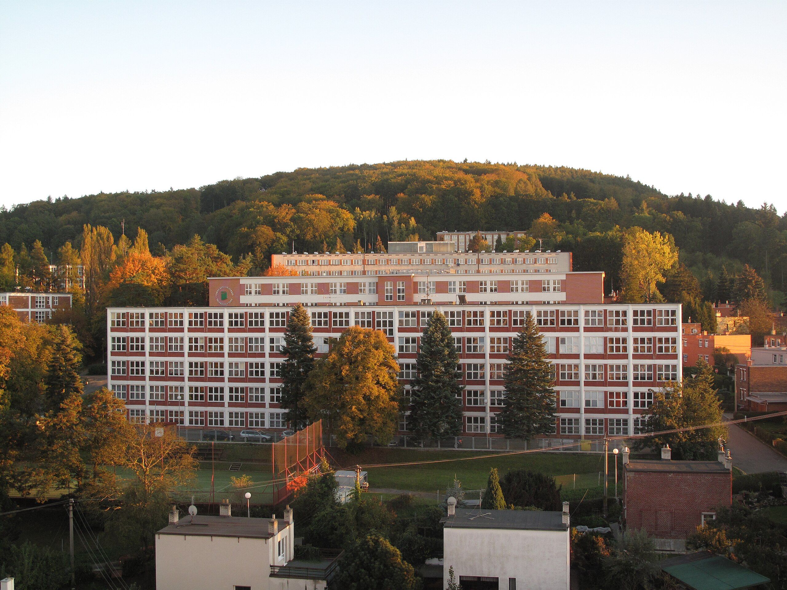
Škola se sestěhovala do moderní centrální budovy na adrese Nad Ovčírnou IV 2528. Díky tomu získala odpovídající zázemí pro současné potřeby vzdělávání a technické přípravy.
-
2025
Baťa jako inspirace
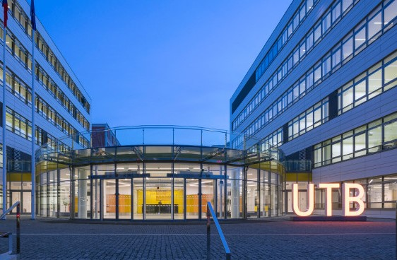
Odkaz Tomáše Bati je stále živý – škola rozvíjí myšlenku propojení vzdělávání s praxí a inovacemi. Studenti dnes čerpají z tradice i moderních technologií a navazují na baťovského ducha podnikavosti.